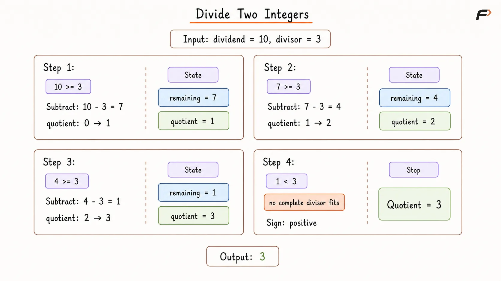
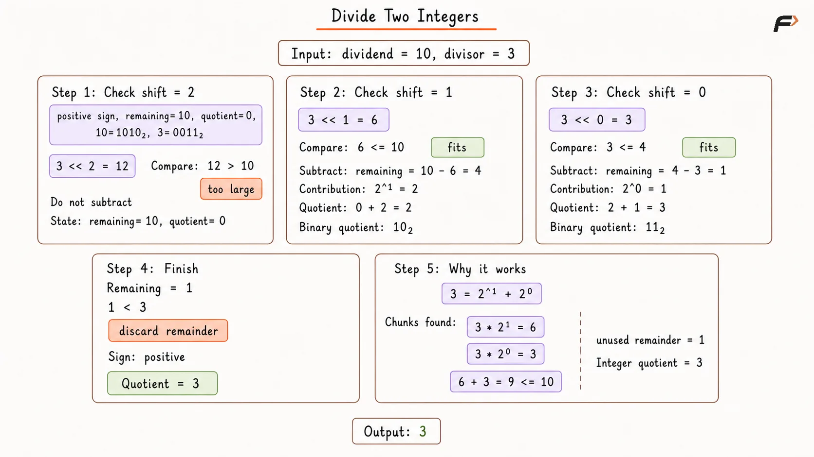

Divide Two Integers Without Multiplication, Division or Modulo
Given two integers dividend and divisor, return the integer quotient obtained by dividing dividend by divisor without using multiplication (*), division (/), or modulo (%) operators.
The fractional part of the result must be discarded, meaning the quotient is truncated toward zero.
Assume:
divisoris non-zero.Both values are 32-bit signed integers.
If the quotient exceeds the maximum 32-bit signed integer value
2³¹ - 1, return2³¹ - 1.
Example 1
Input: dividend = 10, divisor = 3
Output: 3
Explanation: 10 / 3 gives a quotient of 3 with a remainder. After truncating toward zero, the result is 3.
Example 2
Input: dividend = 7, divisor = -3
Output: -2
Explanation: The mathematical result lies between -2 and -3. Truncating toward zero gives -2.
Brute Force Approach
Division can be viewed as repeatedly removing the divisor from the dividend.
After converting both numbers to positive magnitudes, subtract the divisor while it still fits inside the remaining dividend. The number of successful subtractions becomes the magnitude of the quotient.
The sign can be handled separately, depending on whether the original inputs have the same or different signs.
Algorithm
Determine whether the final quotient should be negative. It is negative only when
dividendanddivisorhave different signs.Convert both values to positive magnitudes using a wider integer type, because the absolute value of
INT_MINcannot be represented by a 32-bit signed integer.Initialize
quotient = 0to count how many complete copies of the divisor fit inside the dividend.While the remaining dividend is at least the divisor, subtract one divisor and increase
quotient.Apply the required sign to the quotient.
If the result exceeds the 32-bit signed range, clamp it to
INT_MAX; otherwise return the signed quotient.
Dry Run

Divide Two Integers Brute Force Dry Run .png
Solution
#include <bits/stdc++.h>
using namespace std;
class Solution {
public:
int divide(int dividend, int divisor) {
bool negative = (dividend < 0) ^ (divisor < 0);
/*
* Convert to long long before taking absolute values
* so INT_MIN can be represented safely as positive.
*/
long long dividendAbs = llabs((long long)dividend);
long long divisorAbs = llabs((long long)divisor);
long long quotient = 0;
/*
* Each subtraction represents one complete copy
* of the divisor fitting inside the dividend.
*/
while (dividendAbs >= divisorAbs) {
dividendAbs -= divisorAbs;
quotient++;
}
long long result = negative ? -quotient : quotient;
// Clamp results that cannot fit in a signed 32-bit integer.
if (result > INT_MAX) {
return INT_MAX;
}
if (result < INT_MIN) {
return INT_MIN;
}
return (int)result;
}
};
int main() {
int dividend = 10;
int divisor = 3;
Solution solution;
cout << solution.divide(dividend, divisor) << endl;
return 0;
}Complexity Analysis
Time Complexity: O(|quotient|), because one copy of the divisor is removed in every iteration.
Space Complexity: O(1), because only a few variables are used.
Optimal Approach
Repeated subtraction is slow because it removes only one divisor at a time.
Instead, use left shifts to consider larger multiples of the divisor:
divisor << k
represents multiplying the divisor magnitude by 2^k.
Starting from the largest useful bit position, check whether that shifted divisor still fits inside the remaining dividend. If it does, subtract the whole chunk at once and add 2^k to the quotient.
By checking powers of two from large to small, the quotient is built directly in binary without performing multiplication or division.
Algorithm
Determine whether the quotient should be negative by checking whether the input signs differ.
Convert
dividendanddivisorto positive magnitudes using a wider integer type soINT_MINcan be handled safely.Initialize
quotient = 0.Traverse bit positions from
31down to0. For eachshift, compute the chunk represented byabsDivisor << shift.If that chunk does not exceed the remaining dividend, subtract it and add
1LL << shiftto the quotient because that power of two belongs in the binary representation of the quotient.Apply the original sign, clamp the only overflowing 32-bit result when necessary, and return the quotient.
Dry Run

Divide Two Integers Optimal Approach Dry Run .png
Solution
#include <bits/stdc++.h>
using namespace std;
class Solution {
public:
int divide(int dividend, int divisor) {
bool negative = (dividend < 0) ^ (divisor < 0);
/*
* Wider positive magnitudes allow shifts to be
* performed safely even when dividend is INT_MIN.
*/
long long dividendAbs = llabs((long long)dividend);
long long divisorAbs = llabs((long long)divisor);
long long quotient = 0;
/*
* Check larger powers of two first so each accepted
* chunk determines one bit of the quotient.
*/
for (int shift = 31; shift >= 0; shift--) {
long long chunk = divisorAbs << shift;
if (chunk <= dividendAbs) {
dividendAbs -= chunk;
/*
* This chunk represents divisor * 2^shift,
* so the same power belongs in the quotient.
*/
quotient += (1LL << shift);
}
}
long long result = negative ? -quotient : quotient;
// INT_MIN / -1 produces 2^31, which must be clamped.
if (result > INT_MAX) {
return INT_MAX;
}
if (result < INT_MIN) {
return INT_MIN;
}
return (int)result;
}
};
int main() {
int dividend = 10;
int divisor = 3;
Solution solution;
cout << solution.divide(dividend, divisor) << endl;
return 0;
}Complexity Analysis
Time Complexity: O(log |dividend|) in terms of the number of bits examined. For fixed 32-bit integers, at most 32 bit positions are checked, so the work is bounded by a constant.
Space Complexity: O(1), because only a constant number of variables are used
Interview follow-up Questions
INT_MIN is -2³¹, while the largest positive 32-bit integer is only 2³¹ - 1. Therefore, abs(INT_MIN) cannot be stored safely in a signed 32-bit integer. Converting to a wider type first avoids this overflow.